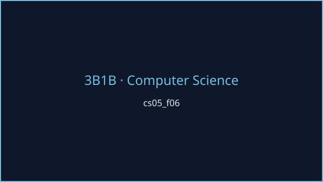

আগের পাঠে আমরা ''crane''-কে সেরা প্রথম শব্দ বলেছিলাম—কারণ তার এন্ট্রপি সবচেয়ে বেশি। কিন্তু সেই হিসাব একটা বিষয় উপেক্ষা করেছিল: আমাদের শেষ পর্যন্ত সঠিক উত্তরটিও বলতে হবে।
সবচেয়ে বেশি তথ্য দেওয়া শব্দ কি সবচেয়ে বেশিবার জেতায়? দেখা যাচ্ছে না।
কোনো শব্দ যদি দারুণ তথ্য দেয় কিন্তু নিজে কখনো উত্তর না হয়, তবে সেটি ব্যবহার করে আমাদের একটি ধাপ ''নষ্ট'' হয়। অন্যদিকে যে শব্দটি নিজে উত্তর হওয়ার সম্ভাবনা বেশি, সেটি কম তথ্য দিলেও শেষে লাভবান হয়।
অর্থাৎ সঠিক মাপদণ্ড হলো—কতটা তথ্য পাই *এবং* কতটা সম্ভাবনা থাকে যে পরের ধাপেই শেষ করে দিতে পারব।
এই দুটি বিষয় একসাথে বিবেচনা করে নতুন গণনায় ''soare''-এর মতো শব্দ এগিয়ে আসে। 'crane'-এর চেয়ে এর তথ্য লাভ সামান্য কম, কিন্তু শেষ ধাপে জেতার হার বেশি—ফলে গড় ধাপ কমে যায়।
ওয়ার্ডল খেলা আসলে একটি সিদ্ধান্ত বৃক্ষ—প্রতিটি অনুমান এক ধাপ নামে। আমাদের লক্ষ্য হলো গড় গভীরতা কমানো। তথ্য তত্ত্ব সেই গভীরতার নিচের সীমা নির্ধারণ করে।
$\mathbb{E}[\text{ধাপ}] \geq H / \log_2(\text{শাখা})$—এই সীমার কাছাকাছি যাওয়াই লক্ষ্য।
এই ছোট্ট অনুসন্ধান আমাদের শেখায়—গাণিতিক ''সেরা'' আর ব্যবহারিক ''সেরা'' এক নয়। মডেলের লক্ষ্য ঠিক করে তারপরই মাপদণ্ড বাছাই করতে হয়।
নিচের ইন্টারেক্টিভ উপাদান ও কুইজের মাধ্যমে পাঠের ধারণা নিজে যাচাই করুন।
